From download to your first file, in five minutes.
Dieci passi, nell'ordine in cui li farai davvero in impianto. Il primo si fa con la versione base;
dal secondo in poi serve la chiave PRO, perché collegarsi al PLC e registrare sono funzioni PRO.
Dentro il programma ogni schermata ha la sua spiegazione: F1 apre il manuale al punto in cui sei.
Ten steps, in the order you will really do them on site. The first one works with the base version;
from the second on you need the PRO key, because connecting to the PLC and recording are PRO features.
Inside the program every screen explains itself: F1 opens the manual at the point you are in.
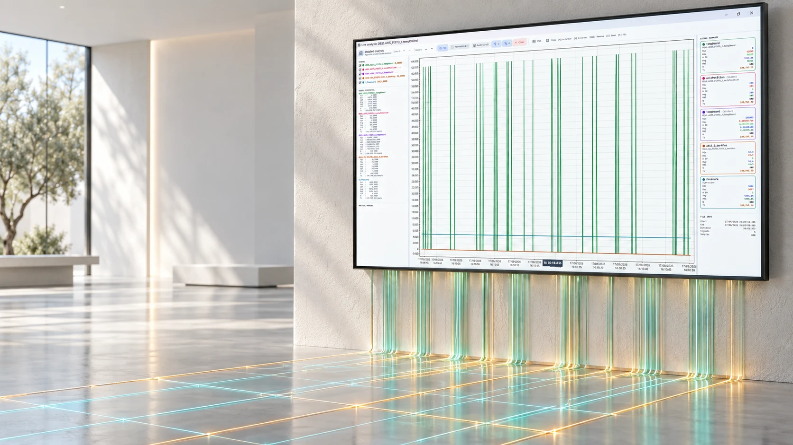
Prima di partireBefore you startServe solo l'indirizzo IP della CPU e un cavo di rete.All you need is the CPU's IP address and a network cable.
1 · Installa
1 · Install
Scarica PlcTraceViewer_Setup_v2.0.exe e avvialo. Se Windows
SmartScreen avvisa che l'editore non è riconosciuto, scegli Ulteriori informazioni →
Esegui comunque: l'installer non è firmato con un certificato commerciale, ma il file
arriva dalla pagina delle release su GitHub.
Download PlcTraceViewer_Setup_v2.0.exe and run it. If Windows
SmartScreen warns that the publisher is not recognised, choose More info → Run
anyway: the installer is not signed with a commercial certificate, but the file comes
from the GitHub releases page.
Il runtime è dentro l'installer: non serve installare altro. Il servizio della dashboard web
viene registrato e avviato da sé. Se stai aggiornando, chiudi la versione precedente prima di
procedere.
The runtime is inside the installer: nothing else to install. The web dashboard service is
registered and started on its own. If you are updating, close the previous version first.
2 · Collega la CPU PRO
2 · Connect the CPU PRO
Da qui in poi serve la chiave PRO: l'acquisizione dal vivo e la registrazione
non sono nella versione base, che apre e analizza le registrazioni già fatte.From here on you need the PRO key: live acquisition and recording are not in the
base version, which opens and analyses recordings that already exist.
Apri una finestra Live, scrivi l'indirizzo IP della CPU e scegli il modo di collegamento.
S7 Native copre PUT/GET e S7comm-Plus sulle CPU nuove; OPC UA è l'alternativa
simbolica quando il server è attivo sulla CPU.
Open a Live window, type the CPU's IP address and pick the connection mode. S7 Native
covers PUT/GET and S7comm-Plus on the newer CPUs; OPC UA is the symbolic alternative
when the server is enabled on the CPU.
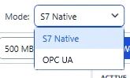
Prima di insistere con Connect, usa Test TCP: dice se la porta 102 è
raggiungibile. Il test approfondito va oltre e manda una vera richiesta di connessione
ISO-on-TCP: smaschera i tunnel che inoltrano la porta ma non parlano S7, e gli errori di
rack/slot.
Before insisting with Connect, use Test TCP: it tells you whether port 102 is
reachable. The deep test goes further and sends a genuine ISO-on-TCP connection request:
it exposes tunnels that forward the port without speaking S7, and wrong rack/slot settings.
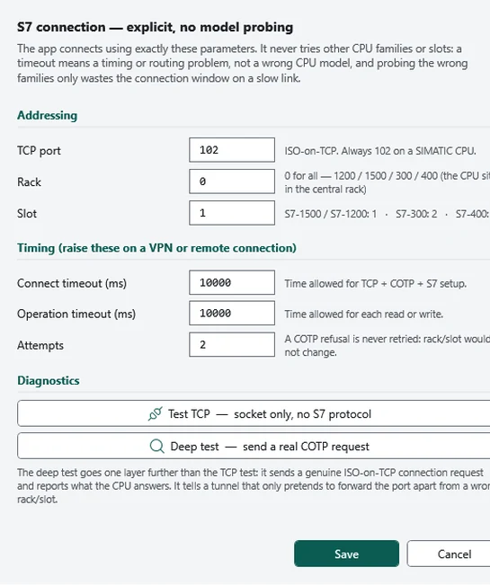
Slot 1 per S7-1500 e S7-1200, slot 2 per S7-300, slot 3 per S7-400. Rack 0 per tutte.Slot 1 for S7-1500 and S7-1200, slot 2 for S7-300, slot 3 for S7-400. Rack 0 for all of them.
Su VPN o collegamento remotoOn a VPN or a remote link: alza i timeout. Un timeout è un problema di tempi o di percorso, non un modello
di CPU sbagliato — il programma non prova altre famiglie alla cieca.: raise the timeouts. A timeout is a timing or routing problem, not a wrong CPU
model — the program never blindly probes other families.
3 · Dai i nomi ai segnali
3 · Give signals their names
Un indirizzo come DB38.DBD64 non dice niente a chi legge il file fra
sei mesi. Ci sono quattro modi per avere i nomi veri, e si possono combinare.
An address like DB38.DBD64 means nothing to whoever reads the file six
months from now. There are four ways to get the real names, and they can be combined.
a · Dal progetto TIA
a · From the TIA project
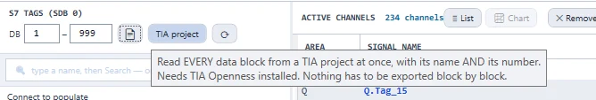
b · Da una tabella tag
b · From a tag table
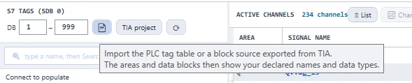
c · Direttamente dalla CPU
c · Straight from the CPU
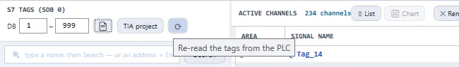
d · Dal blocco DB_Trace standard
d · From the standard DB_Trace block
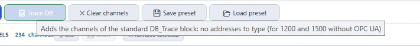
Su S7-1200 e S7-1500 l'elenco e la struttura dei blocchi si leggono dalla CPU anche senza avere
il progetto: è la via più rapida quando sei in impianto e il progetto ce l'ha qualcun altro.
On S7-1200 and S7-1500 the block list and structure are read from the CPU even without the
project: the quickest route when you are on site and somebody else has the project.
4 · Scegli i canali
4 · Choose the channels
Nell'albero a sinistra trovi ingressi, uscite, merker e tutti i blocchi dati. Trascina una
variabile nell'elenco dei canali attivi; trascinando un intero DB prendi tutte le sue variabili
in un colpo solo.
The tree on the left holds inputs, outputs, memory and every data block. Drag a variable into
the active-channel list; drag a whole DB and you take all of its variables at once.
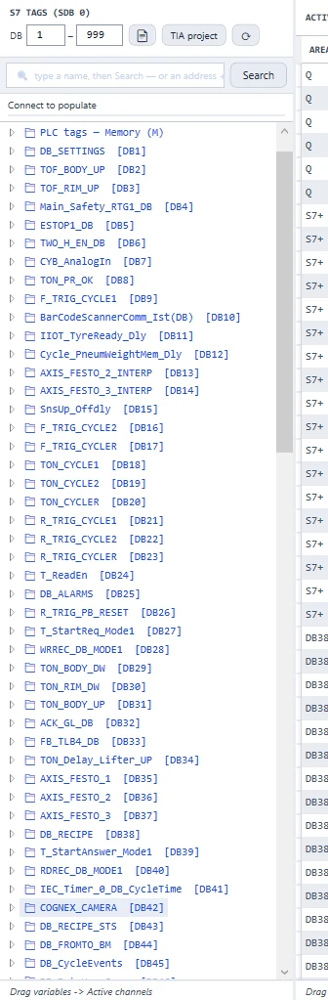
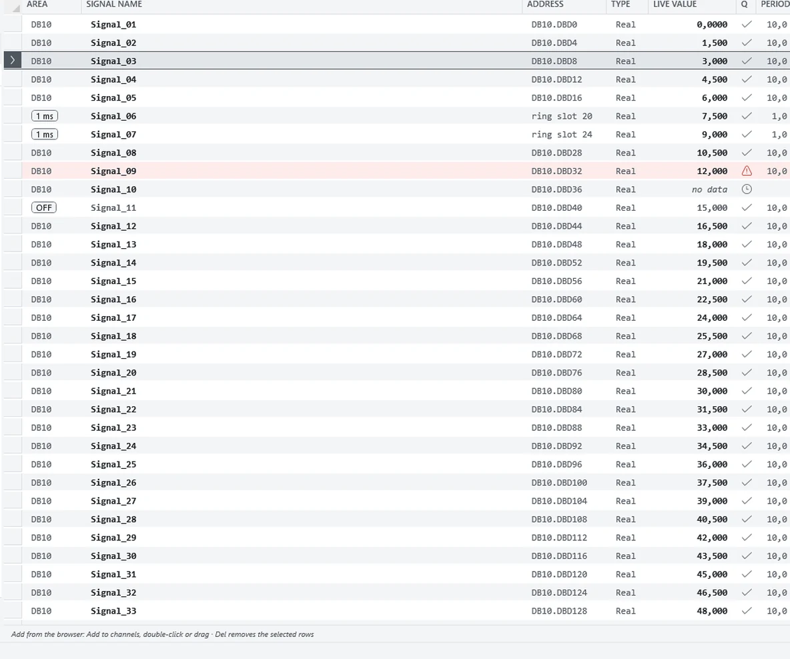
Quando la lista ti piace, Save preset: la prossima volta la rimetti in piedi in due
secondi. Del toglie i canali selezionati.
When you like the list, Save preset: next time you rebuild it in two seconds. Del
removes the selected channels.
5 · Imposta la velocità (e falla verificare)
5 · Set the rate (and have it checked)
Scegli l'intervallo — da 1 ms a 5 s — e la dimensione alla quale i file ruotano. Poi guarda il
pannello ACQUISITION: ti dice la frequenza reale, il periodo, quanti campioni hai preso e
quanti canali rispondono.
Pick the interval — from 1 ms to 5 s — and the size at which files rotate. Then watch the
ACQUISITION panel: it tells you the real rate, the period, how many samples you have taken and
how many channels are answering.
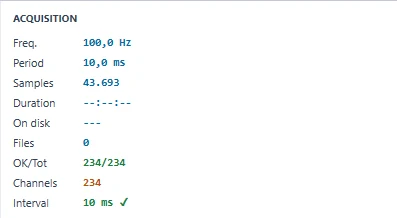
Se l'intervallo che hai chiesto non regge su quella CPU con quei canali, il programma te lo
dice prima di aprire il primo file e ti propone quello che regge davvero:
If the interval you asked for does not hold on that CPU with those channels, the program tells
you before the first file is opened and offers the one that really does:
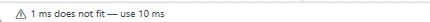
Accanto a ogni canale trovi PERIOD e RATE: il passo con cui quel
canale viene realmente letto. Se uno rallenta, lo vedi lì.Next to every channel you get PERIOD and RATE: the step at which that
channel is actually read. If one slows down, that is where you see it.
6 · Registra
6 · Record
Scegli la cartella di destinazione e premi START REC. Da quel momento i campioni vanno su
disco con il loro istante reale; i valori che non arrivano restano mancanti, non diventano zero.
Pick the destination folder and press START REC. From then on samples go to disk with
their real instant; values that do not arrive stay missing, they never become zeros.
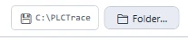
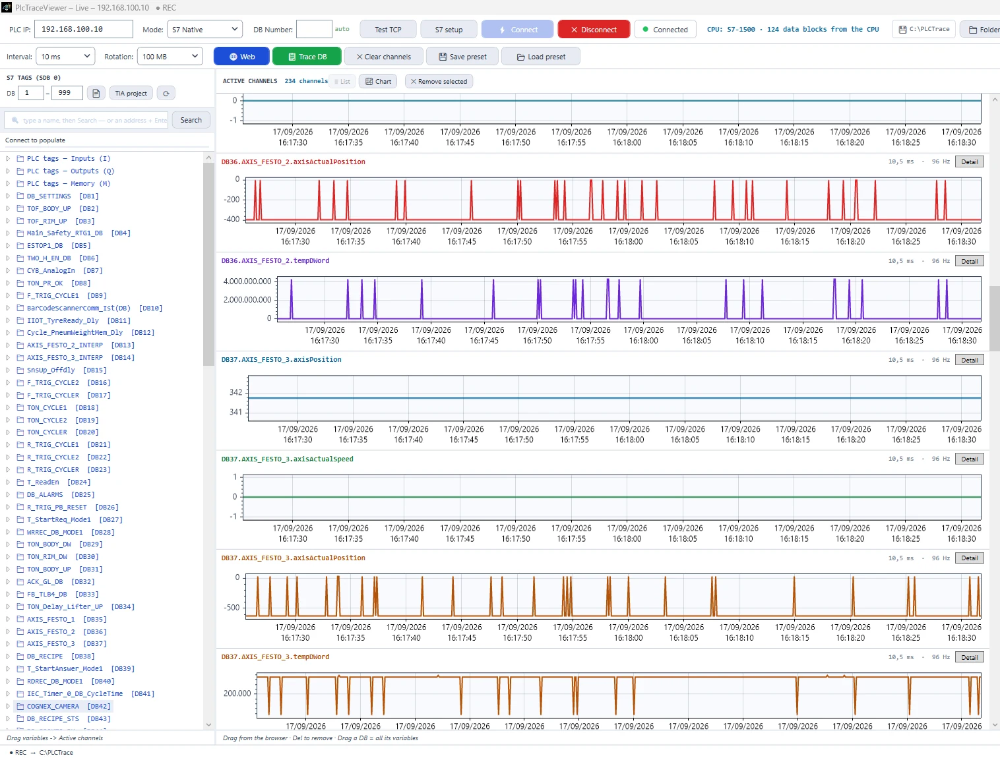
Mentre registra puoi già guardare le curve: il file intanto cresce sul disco.While it records you can already watch the curves: the file keeps growing on disk meanwhile.
I file vengono raccolti in una cartella per giorno e ruotano alla dimensione che hai scelto. I
più vecchi vengono compressi e, secondo la conservazione impostata, rimossi — mai quello in
corso. Puoi lasciarlo registrare tutta la notte: la scrittura è sorvegliata e, se si ferma, lo
vedi subito nel registro.
Files are collected one folder per day and rotate at the size you chose. The oldest are
compressed and, according to the retention you set, removed — never the one in progress. You can
leave it recording all night: writing is watched and, if it stops, you see it in the log at once.
7 · Analizza — anche mentre registra
7 · Analyse — while it is still recording
Doppio clic su un canale e si apre la finestra di analisi, con il segnale che continua ad
arrivare. Trascina dentro altri canali per sovrapporli sullo stesso asse dei tempi.
Double-click a channel and the analysis window opens, with the signal still arriving. Drag other
channels in to overlay them on the same time axis.
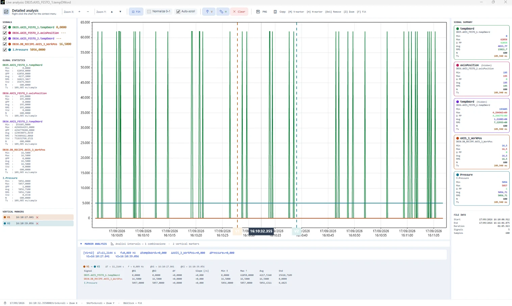
Posiziona due marker verticali (M) e uno o più orizzontali (H): la tabella sotto il
grafico calcola ΔT, la frequenza corrispondente e la differenza di ogni segnale fra i due marker.
Si copia e si incolla in un rapporto.
Place two vertical markers (M) and one or more horizontal ones (H): the table under
the chart works out ΔT, the matching frequency and every signal's difference between the two
markers. It copies and pastes into a report.
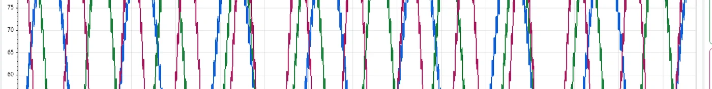
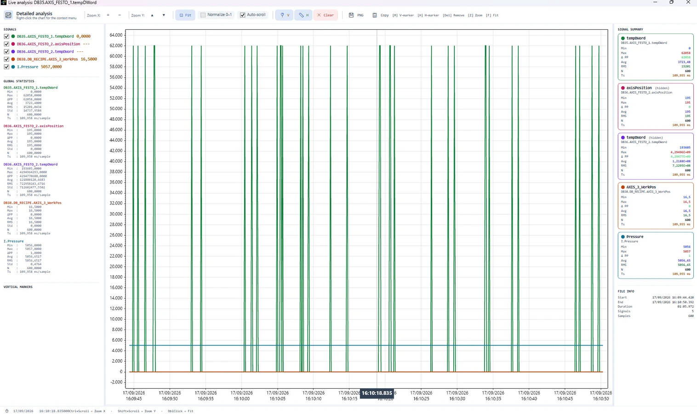
Statistiche del tratto selezionato e dell'intero segnale, sempre accanto alla curva.Statistics of the selected span and of the whole signal, always next to the curve.
Da qui esporti in CSV solo i canali e il tratto che ti servono, o l'immagine del grafico
(entrambe funzioni PRO). E se un canale deve essere una formula invece che un
indirizzo — una derivata, un filtro, un valore efficace — l'editor delle espressioni ti mostra
la curva mentre la scrivi.
From here you export just the channels and the span you need as CSV, or the chart as an image
(both PRO features). And if a channel should be a formula instead of an address — a
derivative, a filter, an RMS value — the expression editor shows you the curve as you write it.
8 · Dashboard web (PRO)
8 · Web dashboard (PRO)
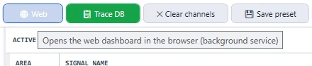
Il pulsante Web apre la pagina; il servizio gira già in background sulla porta 8085. Da
qualsiasi PC della rete di impianto vedi i valori correnti e comandi la registrazione —
quella dell'applicazione, non una copia. La pagina non ha autenticazione: usala solo su
una rete di impianto attendibile.
The Web button opens the page; the service is already running in the background on port
8085. From any PC on the plant network you see the current values and command the recording —
the application's own, not a copy. The page has no authentication: use it only on a
trusted plant network.
9 · Quando ti serve davvero 1 ms
9 · When you really need 1 ms
Se la CPU non risponde abbastanza in fretta per il passo che ti serve, sposta il campionamento
dentro il PLC. Il programma scrive tre file (Signal.udt,
DB_TraceHS.db, FC_TraceSampler.scl) da
importare in TIA come sorgenti esterne.
If the CPU does not answer fast enough for the step you need, move sampling inside the PLC. The
program writes three files (Signal.udt,
DB_TraceHS.db, FC_TraceSampler.scl) to import
into TIA as external sources.
Scegli quanti segnali per tipo (lasciandone qualcuno di scorta: aggiungere un segnale dopo sarà
un solo MOVE, senza riesportare nulla) e la profondità del buffer. Il blocco
DB_TraceHS va tenuto non ottimizzato, con PUT/GET abilitato, e
FC_TraceSampler va richiamato da un OB di interrupt ciclico a 1000 µs.
Choose how many signals of each type (leave a few spare: adding a signal later is then a single
MOVE, with nothing to re-export) and the buffer depth. Keep
DB_TraceHSnon-optimised with PUT/GET enabled, and call
FC_TraceSampler from a cyclic interrupt OB at 1000 µs.
Sono blocchi nuovi: nessun blocco esistente viene toccato e nessun DB in
uso viene reinizializzato. Il download si fa in RUN.They are new blocks: nothing existing is touched and no DB in use is
reinitialised. The download happens in RUN.
10 · Se qualcosa non va
10 · If something goes wrong
Sintomo
Di solito è
Symptom
Usually it is
Timeout al collegamento
Rete o routing, non il modello di CPU: prova Test TCP, poi il test approfondito. Su VPN alza i timeout.
Timeout when connecting
Network or routing, not the CPU model: try Test TCP, then the deep test. On a VPN raise the timeouts.
La connessione viene rifiutata subito
Rack/slot sbagliati, oppure l'accesso PUT/GET non è abilitato nella configurazione della CPU.
The connection is refused at once
Wrong rack/slot, or PUT/GET access is not enabled in the CPU's configuration.
Un DB non si legge per indirizzo
È a accesso ottimizzato: non ha indirizzi assoluti. Serve OPC UA o S7comm-Plus.
A DB cannot be read by address
It has optimised access: it has no absolute addresses. OPC UA or S7comm-Plus is needed.
«1 ms does not fit — use 10 ms»
Quella CPU, con quei canali, non risponde abbastanza in fretta. Riduci i canali, accetta il passo proposto, o sposta il campionamento nel PLC (passo 9).
“1 ms does not fit — use 10 ms”
That CPU, with those channels, does not answer fast enough. Cut channels, accept the step offered, or move sampling into the PLC (step 9).
Il periodo di un canale peggiora
Guarda la colonna PERIOD: è la CPU o la rete a rallentare, non l'interfaccia — l'acquisizione gira in un processo suo.
A channel's period gets worse
Look at the PERIOD column: the CPU or the network is slowing down, not the interface — acquisition runs in its own process.
La dashboard web non si apre
È una funzione PRO e il servizio deve essere avviato; controlla che la porta 8085 non sia occupata o bloccata dal firewall.
The web dashboard does not open
It is a PRO feature and the service must be running; check that port 8085 is neither taken nor blocked by the firewall.
Il manuale completo è dentro il programma: F1 in qualsiasi momento, con 18 argomenti,
dalla prima connessione alle scorciatoie da tastiera.
The full manual is inside the program: F1 at any time, with 18 topics, from the first
connection to the keyboard shortcuts.